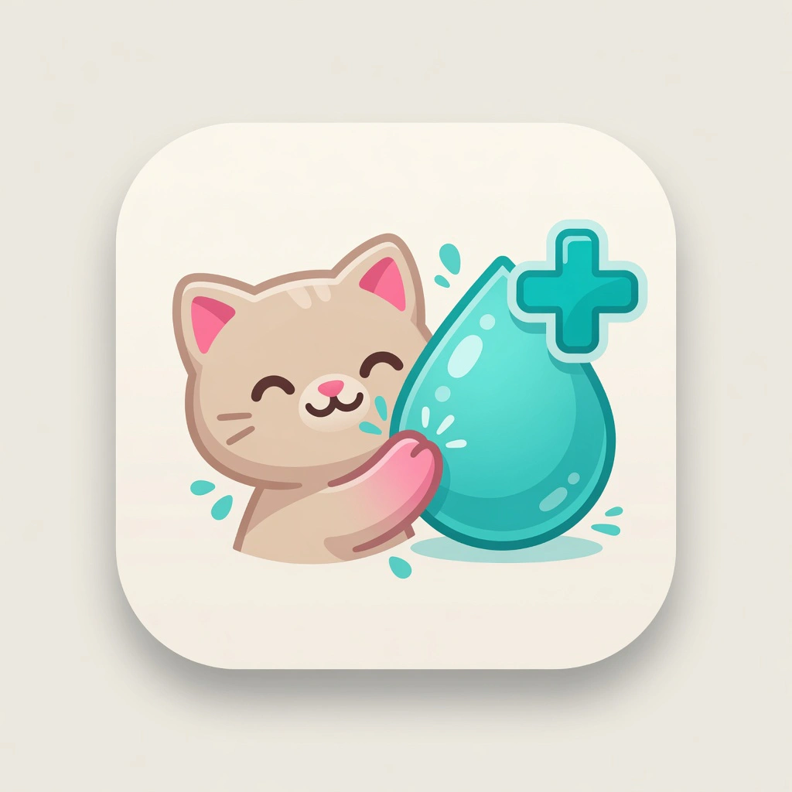
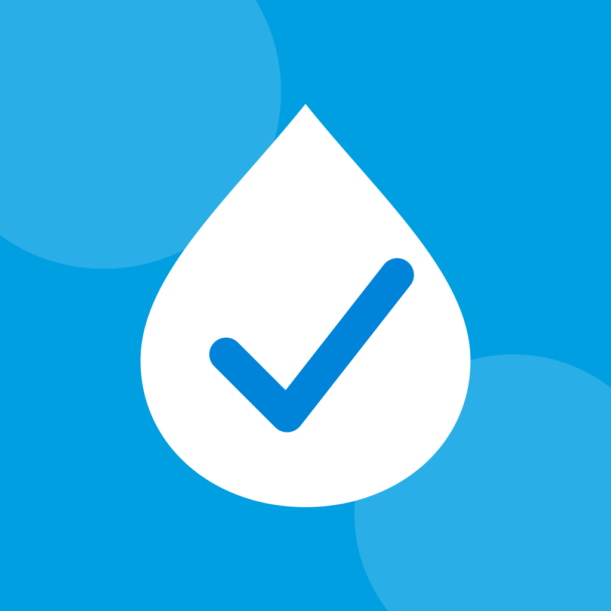
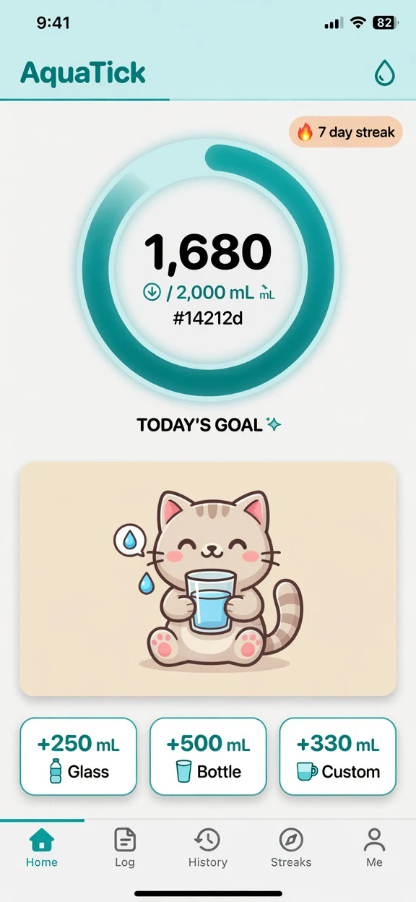
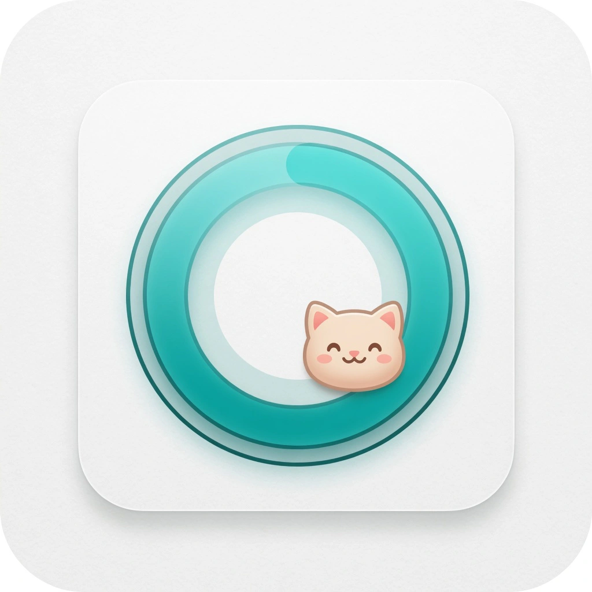
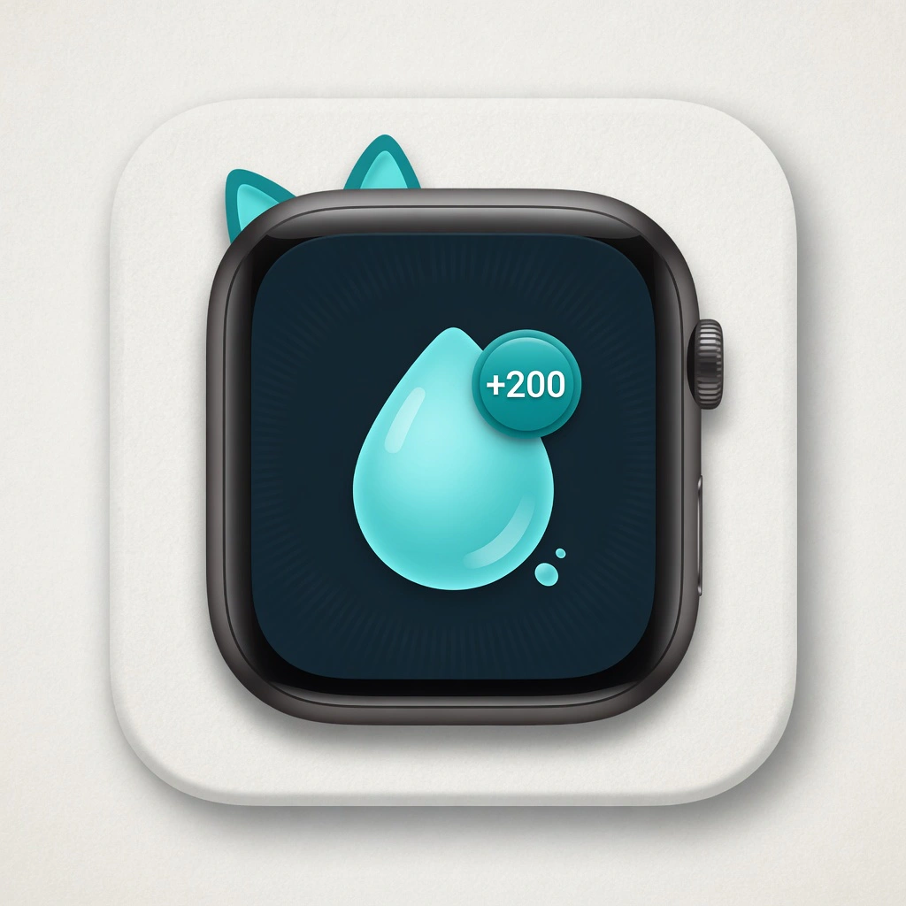
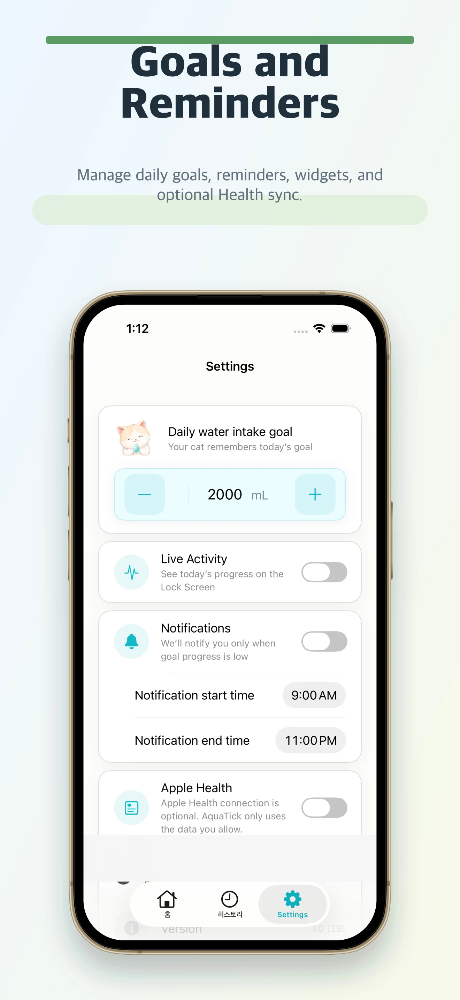
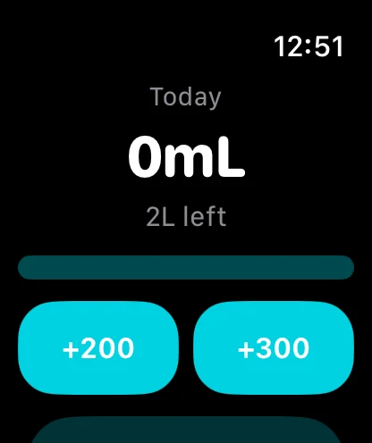

Fast water logging
Record a drink, check progress, and return to what you were doing without turning hydration into a chore.

AquaTickSparkish presents
A lightweight hydration tracker that keeps your daily water goal visible across iPhone, Apple Watch, widgets, and Live Activities.

AquaTick keeps hydration tracking focused on fast logging, clear progress, and the settings people need for goals, reminders, widgets, and optional Health sync.

Record a drink, check progress, and return to what you were doing without turning hydration into a chore.

Adjust your daily goal and reminder windows from the settings screen shown in the actual app.

Use quick add controls on watchOS when your phone is not the fastest surface.
Real App Store screenshots in authentic device frames — scroll or swipe to explore.


AquaTick is available on the App Store from Sparkish.